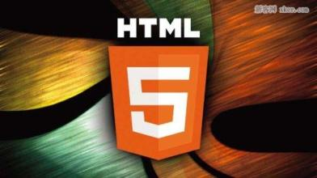
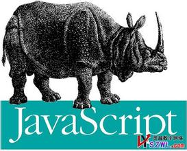
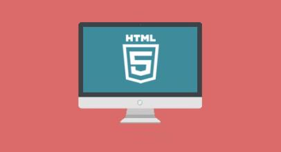

-
- 
- 
- 
关键词：- 聊聊前端
- 信息技术学院
- 学生创新实践基地
- 急性子
- 产品研究
- 运动爱好
谭露成 Jsing，流川枫头像！~~~~关于本站：
本站基于前端技术进行建站，使用到xhtml，css，纯原生javascript，html5，css3技术，Sass预处理，Seajs管理技术。jquery在插件展示中使用。
由于部分地方使用到html5和css3技术，使用对html5和css3友好的浏览器会有更完美的体验！如：Google Chrome；fire fox；IE9等。
本站正在建设中，会进一步完善，欢迎交流......
前端课程不存在大学的课堂里，最多也是某些课程中穿插了几节前端布局重构的课，那也是教我们怎么用table标签布局。
上次去一家公司面试，HR问我：为什么选择web前端开发？当时我一五一十的说出我学习入门的那个过程。
后来想想，其实有一个更深层的原因是一件关于我大学填报志愿时发生的事(先卖个关子)。或许我把它说出来HR会不会觉得有趣点，而不是听我讲那些无聊的“七国的历史”。
没想到吧，这是学院的原名，现名是医学信息工程学院。原因是我们这个计算机专业是属于神奇的广州中医药大学，怎么也要跟医药沾点边，就改名了！
也许你还没听过这个学校的名字，很正常，包括我和周边很多同学都是被录取后才知道有这个学校，一个名字需要背几次才能说得出来的医药学校。XXX领导发话了，别人叫你介绍你学校的时候，你就说是重本和211就行了！孰不知是省211。
阴差阳错来到了这所大学，阴差阳错选到了这个专业，又或许所有的阴差阳错都是命中注定的。路，一直都在自己的脚下。从菜鸟、入门到现在都跟一个组织“学生创新实践基地”离不开干系，这里有大我们一两届的师兄师姐，有小我们一两届的师弟师妹，我们 的学习，生活相互作用、影响着大家，一起分享经验，一起答疑解惑。
说的好像有点玄，其实就是一个由不同年级的学生组成的一个软件开发工作室。悲了剧的急性子，在大学这点体现的尤为突出！它能让我很快很好很完美地完成我的计划，也能让我变得很性急，要求过于严格。我努力着使自己 变得随遇而安，努力着......
不得不说在学前端期间，一个半年去研究产品设计和策划运营，后来还是回归到web前端开发。
特此当时还买了不少产品类的书籍：《人人都是产品经理》,《结网》,《启示录》......都是产品书籍中的大牛。现在，还堆在我左边。
有人说我这期间可浪费了宝贵的半年时间啊！非也。这期间我体会到一个产品的成败因素所在，调研到需求，分析到方案，设计到开发，运营到维护。每一个环节至关重要！
为了加强对产品的研究和理解，当初还拉着两三个同学策划了一个产品“@团队”网站应用，从中碰了不少壁，不过很享受那个过程。
大三刚开学，还屁颠颠地跑去网易大厦邮件部面试产品岗位！哗啦啦地通过了一笔、一面，杀进了二面，然后，然后就没有然后了......说点轻松的，篮球，运动爱好，小学开始，中学到了疯狂的地步，要不然怎么被晒得这么黑，要知道当时（包括现在）打得都是露天球场。
以前临近中考，老师要求课余时间少打球，专心文化课学习。深刻记得一次周五放学，老师到篮球场逮我，哥反侦察能力不差，提前躲了起来，打游击战。挺怀念的~~~~！！高中下课期间一堆男生偷偷的用手机图文直播NBA,班主任经常在后面偷袭....
运动爱好除了篮球之外还很多，排球，羽毛球，乒乓球，台球，跑步，游泳，骑游.....,都是我的业余爱好！ -
web前端应聘简历
个人信息
姓名： 谭露成 出生： 1991年 性别： 男 现居： 广州番禺区 专业： 计算机科学与技术 学历： 本科 经验： 1年以上 英语： CET-4 QQ : 2930199606 邮箱： 2930199606@qq.com 电话 : 15876594665 博客： web前端的路上 工作经验
- 2013年 中国电信设计院工作
- 公司：中国电信
- 岗位：负责“智慧会展”大型网站平台的前端开发
- 职责：布局重构网站所有页面，利用javascript和jquery实现与后台的交互，各种特效。根据需求封装juqery插件，用Seajs模块化管理js文件
- 产品部分页面连接：中国电信-智慧会展平台
- 2013年 宏领信息科技有限公司
- 职位：web前端开发
- 内容：负责“中华设计行业网”大型网站平台的前端开发
- 职责：重新构建平台的所有页面，针对网站平台的组件进行css框架的封装， 修复上一版本的兼容性bug，利用jquery编写网站所有插件。
- 产品部分页面连接：中华设计行业网
更多详情，请关注网站其他模块~~~